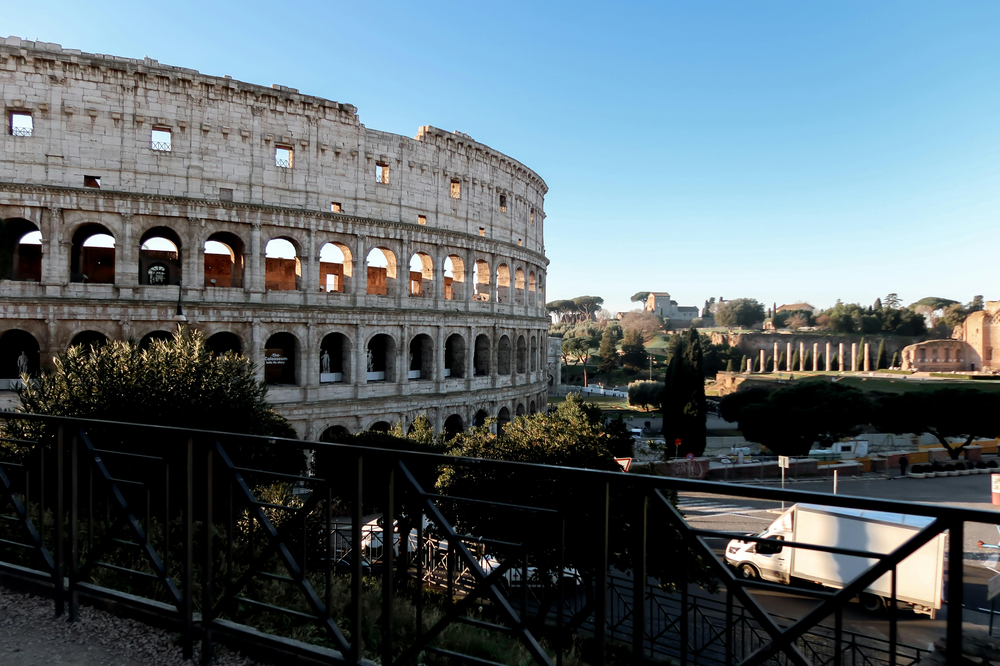

Bienvenido a Roma
Roma, la "Ciudad Eterna", es un museo al aire libre donde cada rincón respira tres milenios de historia. Capital de Italia y cuna de la civilización occidental, impresiona con monumentos icónicos como el Coliseo, el Panteón y la Fontana de Trevi. Más allá de su glorioso pasado romano, la ciudad ofrece la majestuosidad de la Ciudad del Vaticano y la belleza barroca de sus plazas. Perderse por las calles del Trastévere o disfrutar de una auténtica pasta carbonara en una trattoria local es parte de su encanto irresistible. Roma es un destino fundamental para los amantes del arte, la historia y la buena vida que desean sumergirse en la esencia del Mediterráneo.
Fechas: 12/04/2026 - 19/04/2026
Precio: 1450€ por persona
Incluye: Alojamiento, desayuno, tour por los Museos Vaticanos y transporte local.
Lista de alojamientos disponibles:
- Hotel Hassler Roma
- Hotel Artemide
- IQ Hotel Roma